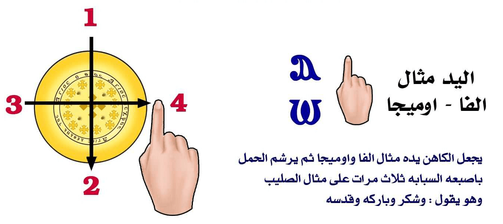
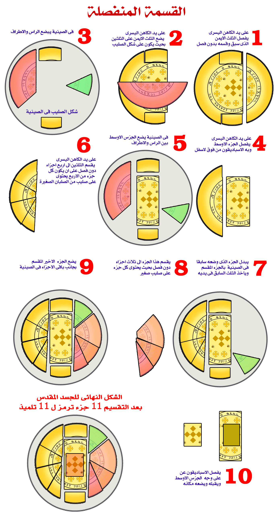

| صلاة الصلح |
| يقول الكاهن |
| إشليل | صل |
| يجاوبه الشماس |
| إيبى إبروس إفكى إستاثيتى | للصلاة قفوا |
| يقول الكاهن |
| إيرينى باسى | السلام للكل |
| يقول الشعب |
| كيطو إبنيفماتى سو | ولروحك أيضًا |
| باسيلى - يا الله العظيم |
| إفنوتي بي نشتي بي شا إينيه في إبطاف كوت إمبي رومي إى إهري إيجين تي ميت أتطاكو. أووه إفمو إيطاف إي إيخون إي بي كوزموس هيتين بي إفثونوس إنتي بي ذيافولوس آك شير شورف. هيتين بي أو أونه إيفول إنريف تنخو إنتي بيك مونوجينيس إنشيري بين شويس أووه بين نوتي أووه بين سوتير إيسوس بي إخرستوس أووه آك موه إم بي كاهي إيفول خين تي هيريني تي إيفول خين نيفيئووي ثاي إت إيري تي ستراتيا إنتي ني آنجيلوس تي أو اوناك إنخيتس إفجو إمموس جي أوأو أو إم إفنوتي خين ني إتتشوسي نيم أو هيريني هيجين بي كاهي نيم أوتيماتي خين ني رومي | يا الله العظيم الأبدي الذي جبل الإنسان على غير فساد والموت الذي دخل إلى العالم بحسد إبليس هدمته بالظهور المحيي الذي لإبنك الوحيد الجنس ربنا وإلهنا ومخلصنا يسوع المسيح وملأت الأرض من السلام الذي من السموات هذا الذي أجناد الملائكة يمجدونك به قائلين: المجد لله في الأعالي وعلى الأرض السلام وفي الناس المسرة |
| يجاوبه الشماس |
| إبروس إفكساستي إيبرتيس تيلياس إيرينيس كي أغابيس آجيون إسباسمون طون آبوسطولون | صلوا من أجل السلام الكامل والمحبة والقبلة الطاهرة الرسولية |
| يقول الشعب |
| كيريى إليسون | يا رب ارحم |
| يرفع الكاهن اللفافة الموضوعة فوق الإبروسفارين بيديه ويقول |
| خين بيك تيماتي إفنوتي موه إننهيت خين تيك هيريني. أووه ماطوفون إيقول هاثوليب نيفين نيم إكروف نيفين نيم ميتشوفي نيقين نيم بان أورجيا نيقين نيم تي ميت ريف إيبر إفميفئي إنتي تي كاكيا إتئيرفورين إم إفمو. أووه آريتين إن إم إبشاتيرين بين نيب إيثرين إير أسبازيستي إنين إيريؤخين أوفي إثؤواب. إى إيجين تين تشي خين أو ميت أت هي تتين إي إبهاب إيفول خين تيك ذوريا إن أثمو أووه إن إيبورانيون خين بي إخرستوس إيسوس بين شويس. | بمسرتك يا الله إملأ قلوبنا من سلامك وطهرنا من كل دنس ومن كل غش ومن كل رياء ومن كل فعل خبيث ومن تذكار الشر الملبس الموت وإجعلنا مستحقين كلنا يا سيدنا أن نقبل بعضنا بعضاً بقبلة مقدسة لكي ننال بغير وقوع في دينونة من موهبتك غير المائتة السمائية بالمسيح يسوع ربنا |
| الأسبسمس الآدام |
| أونوف إممو ماريا تى فوكى أووه تيماف جى فيئت خين بى آميرنى آنجيلوس سيهوس إيروف أووه نى شيروفيم سى أوأوشت إمموف إكسيوس نيم نى سيرافيم خين أوميت آت مونك إممون إنتان إنؤو باريسيا خاتين بين شويس إيسوس بى اخرستوس خوريس نى طوفه نيم نى إبريسفيا أوتين شويس إن نيب تيرين تى ثيئوطوكوس هينا إنتين هوس إيروك نيم نى شيروفيم نيم نى سيرافيم إنؤوش إيفول إنجو إمموس جى: إكؤواب إكؤواب إكؤواب ابشويس بى بانطوكراطور إتفى نيم إبكاهى ميه إيفول خين بيك أو أو نيم بيك طايو تين تيهو إيروك أو إيوس ثيئوس إثريك آريه إى إب أونخ أم بين بطريارشيس آفا (…….) بى أرشى إرفس ماطاجروف هيجين بيف إثرونوس | افرحي يا مريم العبدة والأم لأن الذي في حجرك الملائكة تسبحه والشاروبيم يسجدون له باستحقاق والسيرافيم بغير فتور ليس لنا دالة عند ربنا يسوع المسيح سوى طلباتك وشفاعتك يا سيدتنا كلنا السيدة والدة الإله لكي نسبحك مع الشاروبيم قائلين: قدوس قدوس قدوس أيها الرب ضابط الكل السماء والأرض مملوءتان من مجدك وكرامتك نسألك يا ابن الله ان تحفظ حياة بطريركنا أنبا (……) رئيس الكهنة ثبته على كرسيه |
| يقول الشماس |
| أسبازيستي الليلوس إن فيليما تي آجيو كيريي إليسون (3) ناي كيريي إيتي فاي بي إيسوس بي إخرستوس إبشيري إم إفنوتي سوتيم إيرون أووه ناي نان. | قبلوا بعضكم بعضاً بقبلة مقدسة يا رب ارحم (3) نعم يا رب الذي هو يسوع المسيح ابن الله الحي إسمعنا وأرحمنا |
| إبروسفرين كاطا إطروبو إستاثيتي كاطا إطرومو إيس أناطولاس إفليبساتي إبروس خومين | تقدموا على هذا الرسم قفوا بخوف ورعدة وإلى الشرق أنظروا ننصت |
| يقول الشعب |
| هيتين ني إبريسفيا إنتي تي ثيئو طوكوس إثؤواب ماريا إبشويس آري إهموت نان إمبي كو إيفول إنتي نين نوفي تين أوأوشت إمموك أوبي إخرستوس نيم بيك يوت إن آغاثوس نيم بي إبنيقما اثؤواب جي آك إى آك سوتي إممون إى ليئوس إيرينيس ثيسيا إيني سيئوس | بشفاعات والدة الإله القديسة مريم يا رب انعم لنا بمغفرة خطايانا نسجد لك أيها المسيح مع أبيك الصالح والروح القدس لنك أتيت وخلصتنا رحمة السلام ذبيحة التسبيح |
| مستحق وعادل |
| وبعد إنتهاء صلاة الصلح يرفع الكاهن الإبروسفارين ويسلمه للشمامسة ثم يضع الكاهن اللفافة التي معه على يده اليسري ويأخذ اللفافة التي علي القربانة بيمينه ويرشم بها الشعب أولاً بمثال الصليب |
| يقول الكاهن |
| أوكيريوس ميطابانطون إيمون | الرب مع جميعكم |
| يقول الشعب |
| كي مي طاطو إبنيقماتو سو | ومع روحك أيضاً |
| ثم يرشم الخدام إلى جانبي المذبح ويقول |
| آنو إيمون طاس كارذياس | إرفعوا قلوبكم |
| يقول الشعب |
| إيخومين إبروس طون كيريون | هي عند الرب |
| ثم يرشم ذاته ويخضع قائلاً |
| إيفخاريس تيسومين طوكيريو | فلنشكر الرب |
| يقول الشعب |
| أكسيون كي ذي كيئون | مستحق وعادل |
| يقول الكاهن |
| أكسيون كي ذي كيئون أكسيون كي ذي كيئون آليثوس غارخين اوميثمي أكسيون كي ذي كيئون فيئتشوب إننيب إبشويس إفنوتي إنتي تي ميثمي فيئتشوب خاجوؤو إن ني إبنيه أووه إت أوى إن أورو شا إينيه. فيئتشوب خين ني إتتشوسي أووه إت جوشت إيجين نيئتثيقيوت فيئيتاف ثاميو إن إتفي نيم إبكاهي نيم إفيوم نيم نيئتي إنخيتو تيرو. إفيوت إمبين شويس أووه بيننوتي أووه بين سوتير إيسوس بي إخرستوس فاى إيتاك ثاميو إم إبتيرف إيقول هي ططف ني إيتو ناق إيروؤونيم نيئتي إنسيناق إيروؤو آن. فيئت هيمسي هيجين بيإثرونوس إنتي بيف أوأو فيئيتو أوأوشت إمموف هيتين جوم نيفين إثؤواب | مستحق وعادل مستحق وعادل لأنه حقاً بالحقيقة مستحق وعادل أيها الكائن السيد الرب إله الحق الكائن قبل الدهور والمالك إلى الأبد الساكن في العالي والناظر إلى المتواضعين الذي خلق السماء والأرض والبحر وكل ما فيها أبو ربنا وإلهنا ومخلصنا يسوع المسيح هذا الذي خلقت به كل شيئ ما ري وما لا يري الجالس على كرسي مجده المسجود له من جميع القوات المقدسة |
| يقول الشماس |
| إيكاثي ميني آناسثيتي | أيها الجلوس قفوا |
| يقول الكاهن |
| فيئتو أو هي إى راتو ناهراف إنجي ني آنجيلوس نيم ني أرشي آنجيلوس نيم أرشي ني إكسوسيا ني إثرونوس ني ميت شويس ني جوم | الذي يقف أمامه الملائكة ورؤساء الملائكة الرئاسات والسلطات والكراسي والأرباب والقوات |
| يقول الشماس |
| إيس أناطولاس إقليبساتي | إلى الشرق أنظروا |
| يقول الكاهن |
| إنثوك غاربي إتؤ أو هي إيراتو إم بيك كوتي إنجي ني شيروفيم إثميه إمقال نيم ني سيرافيم نابي سو إن تنه. إيقئير هيمنوس خين أومون إيقول إن أت كارورو إيقجو إمموس | انت هو الذي يقف حولك الشاروبيم الممتلئون أعيناً والسيرافيم ذوو الستة الجنحة يسبحون دائماً بغير سكوت قائلين |
| يقول الشماس |
| إبروس خومين | ننصت |
| اسبسموس السنوى: الشاروبيم يسجدون لك |
| يقول الشعب |
| ني شيروفيم سي أو أوشت إمموك نيم ني سيرافيم سي تيؤواو ناك إيف أوش إيقول إقجوإمموس جي آجيوس آجيوس آجيوس كيريوس ساقاؤوت إبلي ريس أو أورانوس كي إيجي تيس آجياس سوذوكسيس | الشاروبيم يسجدون لك، والسيرافيم يمجدونك صارخين قائلين: قدوس قدوس،قدوس رب الصباؤوت، السماء والأرض مملوءتان من مجدك الأقدس |
| الأسبسمس الواطس: أيها الرب إله القوات |
| يقول الشعب |
| إبشويس إفنوتي أنتي نيجوم كوتك أووه جوشت إيقول خين أتفي آناف أووه جيم إبشيني إنتاي قو إن ألولي سيقطوطس أووه سيمنتيس ثاي إيطاس إتشوس إنجي تيك أوى نام. الليلوياالليلويا الليلويا إزمو إيني سيتي نيم ني سيم ماري بيك ناي نيم تيك هيريني أوى إن سوفت إم بيك لاؤس | أيها الرب إله القوات ارجع واطلع من السماء انظر وتعهد هذه الكرمة،اصلحها وثبتها هذه التي غرستها يمينك. هلليلويا هلليلويا هلليلويا. بارك الزروع والعشب فلتكن رحمتك وسلامك حصنا لشعبك |
| آجيوس آجيوس آجيوس |
| ثم يمسك الكاهن اللفافة التي على الكأس بيمينه ويرشم بها ثلاثة رشوم |
| الأول على ذاته |
| آجيوس | قدوس |
| الثاني على الخدام |
| آجيوس | قدوس |
| الثالث على الشعب |
| آجيوس | قدوس |
| ثم يستمر في الصلاة قائلاً |
| إكؤواب إكؤواب إكؤواب خين أو ميثمي إبشويس بيننوتي. فيئيطاف إير إبلازين إممون أووه أفثاميون أووه أفكان خين بي بارذيسوس إنتي إبؤونوف خين إبجين إيثرين إيربرافينين ذى إنتيك إنتولي هيتين ني آباتي إنتي بيهوف أنهي إيقول خين بي كونخ إن إينيه أووه أقئرإكسوريزين إممون إيقول خين بي بارذيسوس إنتي إبؤونوف. إمبيك كان إنثوك أون شا إيقول آللا أك جيم بين شيني خين أو مون إيقول هيتين نيك إبروفيتيس إثؤواب. أووه خين إيتخائي إنتي نيئيهوؤو أكؤونه نان إيقول أنون خانيئتهيمسي خين إبكاكي نيم إتخيفي إم إفمو هيتين بيك مونوجينيس إنشيري بين شويس أووه بيننوتي أووه بينسوتير إيسوس بي إخرستوس فاي إيتي إيقول خين بي إبنيقما إثؤواب نيم إيقول خين تي بارثينوس إثؤواب ماريا | قدوس قدوس قدوس بالحقيقة أيها الرب إلهنا الذي جبلنا وخلقنا ووضعنا في فردوس النعيم وعندما خالفنا وصيتك بغواية الحية سقطنا من الحياة الأبدية و نفينا من فردوس النعيم فلم تتركنا عنك أيضاً إلى افنقضاء بل تعهدتنا دائماً بأنبيائك القديسين وفي أخر الأيام ظهرت لن نحن الجلوس في الظلمة وظلال الموت بإبنك الوحيد الجنس ربنا وإلهنا ومخلصنا يسوع المسيح هذا الذي من الروح القدس ومن العذراء القديسة مريم |
| يقول الشعب |
| آمين | حقاً |
| تجسد وتأنس |
| يقدم الشماس المجمرة للكاهن فيضع فيها يد يخور |
| يقول الكاهن |
| آفتشي ساركس أووه آفئير رومي أووه آف إتسافون إيهان مويت إنتي بي أوجاي. إى آفئير خارزستي نان إمبي يسي بي إيقول إم إبشوي هيتين أوموؤو نيم او إبنيقما. آف أيتين ناف إن أو لاؤس إفثويت ىفئيرين شوبي إثؤواب هيتين بيك إبنيقما إثؤواب فاي إيطاف منري ني إيتي نوف إيتخين بي كوزموس آفتيف إممين إمموف إن سوتي خارون إيئفمو إت أوي إنئورو إيئهري إيجون فاي إبطاف أموني إممون إيقول هيططف إنطوي إيقول هيتين نين نوفي أفشيناف إيبيسيت إى آمنتي إيقول هيتين بي إستافروس | تجسد و تأنس وعلمنا طرق الخلاص وأنعم علينا بالميلاد الذي من فوق بواسطة الماء والروح وجعلنا له شعباً مجتمعاً وصيرنا أطهاراً بروحك القدوس هذا الذي أحب خاصته الذين في العالم وأسلم ذاته فداءاً عنا إلى الموت الذي تملك علينا هذا الذي كنا ممسكين به مبيعين من قبل خطايانا نزل إلى الجحيم عن طريق الصليب (من قبل الصليب) |
| يقول الشعب |
| آمين تي ناهتي | حقاً أؤمن |
| وقام من بين الأموات |
| يقول الكاهن |
| آفطونف ايفول خين نيئثموؤت خين لي إيهوؤو إم ماه شمت أفشيناف إي إبشوى إبنيفيئوي أفهيمسي ساتيك أوى نام إفيوت إي أفئوش إن أو إيهوؤوإنتي شيقيو فاى إيتي إفناؤونه إيفول إنخيتف إيتهاب إتيئيكوميني خين أوذيكيئو سيتي أووه إفناتي إمبي أواي بي أواي كاتا نيف إهفيئوي | وقام من بين الأموات في اليوم الثالث وصعد إلى السموات وجلس عن يمينك أيها الأب ورسم يوما للمجازاة هذا الذي يظهر فيه ليدين المسكونة بالعدل ويعطي كل واحد كنحو أعماله (أو بحسب أعماله) |
| يقول الشعب |
| كاطا طو إيليؤوس سو كيريي كي مي كاطاطس أمرتياس إيمون | كرحمتك يا رب وليس كخطايانا |
| التقديس |
| رشومات الخبز |
| يشير الكاهن بيديه إلى الخبز ثم إلى الخمر وهو يقول |
| أفكودي نان إى إخري إمباي نشتي إمميستيريون إنتي تيميت إيقسبيس | ووضع لنا هذا السر العظيم الذي للتقوي |
| ثم يبخر يديه فوق المجمرة استعداداً لمسك السر وهو يقول |
| إيفثيش غارإيتيف إى إفمو خا إبؤنخ إم بي كوزموس | لأنه فيما هو راسم يسلم نفسه للموت عن حياة العالم |
| يقول الشعب |
| آليثوس بيستيق آومين | نؤمن ونصدق |
| يأخذ الكاهن الخبز على يديه ويرفع اللفافة التي بالصينية ويقبلها بفمه ويضعها على المذبح |
| يقول الكاهن |
| أفتشي إن أويك إيجين نيف جيج أثؤواب إنآتتشني أووه إن آتثوليب أووه إم مكاريون أووه إنريف تانخو | اخذ خبزاً على يديه الطاهرتين اللتين بلا عيب ولا دنس الطوباويتين المحييتين |
| يقول الشعب |
| تي ناهتي جي فاي بى خين اوميثمي أمين | نؤمن ان هذا هو بالحقيقة آمين |
| يضع الكاهن إصبعه اليمين على الخبز الذي على يده اليسري ويرفع نظره إلى فوق |
| يقول الكاهن |
| آفجوشت إي إبشوي إي إتفي هاروك فيئتيفوف إنيوت إفنوتي أووه غفنيب إنتي أؤون نيقين | ونظر إلى فوق نحو السماء إليك يا الله أباه وسيد كل أحد |
| يرشم الخبز بإصبعه ثلاث رشومات مثال الصليب |

| الرشم الاول |
| إيطاف شيبئهموت | وشكر |
| يقول الشعب |
| آمـــــــــــين |
| الرشم الثاني |
| آف إزمو إيروف | وباركه |
| يقول الشعب |
| آمـــــــــــين |
| الرشم الثالث |
| آف إير آجيازين إمموف | وقدسه |
| يقول الشعب |
| آمين بيستيف أومين كي أومولوغومين كي ذوكساذومين | آمين نؤمن ونعترف ونمجد |
| يقسم الكاهن القربانة بتأن إلى ثلثين وثلث بدون فصل بإبهام يده اليمني من اعلي إلى أسفل الثلث عن اليمين والثلثان عن اليسار |

| وينفخ فيها نفخة الروح القدس ويقول |
| آف فشف أفتيف إنني إيتينيوف إن آجيوس إم متثيتيس أووه إن آبوسطولوس إثؤواب إفجو: إمموس جي تشي أؤوم إيقول إنخيتف تيروفاي غاربي باسوما | وقسمه واعطاه لخواصه التلاميذ القديسين والرسل الأطهار قائلاً: خذوا كلوا منه كلكم لأن هذا هو جسدى |
| وهنا يفرق رأس القربانة وأسفلها بإصبعه بدون فصل ويضعها بالصينية ثم ينفض يديه داخل الصينية لئلا يكون قد إلتصق بهما شيء من القربانة |
| يقول الكاهن |
| إنو نافشف إيجين ثينو نيم هان كي ميش إنسي تيف إي إيكو إيقول إنتي ني نوفي فاي ىريتف إيبا إير إفميقتي | الذي يقسم عنكم وعن كثيرين يعطي لمغفرة الخطايا هذا اصنعوه لذكري |
| يقول الشعب |
| فاي بي خين أو ميثمي آمين | هذا هو بالحقيقة آمين |
| رشومات الكأس |
| يضع الكاهن يده على حافة الكأس ويمر بإصبعه على حافتها ويقول |
| باى ريتي أون بي كي أفوت مينينسا بيذيبتون أفئوطف إيقول خين أو إرب نيم أو موؤو | وهكذا أيضاً الكأس بعد العشاء مزجها من خمر (ثمرة الكرمة) وماء |
| يرشم الكاهن الكأس بإصبعه ثلاث رشومات مثال الصليب |
| الرشم الاول |
| إيطاف شيبئهموت | وشكر |
| يقول الشعب |
| آمـــــــــــين |
| الرشم الثاني |
| آف إزمو إيروف | وباركه |
| يقول الشعب |
| آمـــــــــــين |
| الرشم الثالث |
| آف إير آجيازين إمموف | وقدسه |
| يقول الشعب |
| آمين كي بالين بيستيق أومين كي أو مولوغومين كي ذو كساذومين | آمين وأيضاً نؤمن ونعترف ونمجد |
| يمسك الكاهن حافة الكأس بيده وينفخ نفخة الروح القدس ويقول |
| آف جيمتيبي أف تيف أون إنني إيتينوف إن آجيوس إم ماثيتيس أووه إن آبوسطولوس إثؤواب إفجوس إمموس | وذاق واعطاها أيضاً لتلاميذه القديسين ورسله الطهار قائلاً |
| ثم يحرك الكأس مثال الصليب بلطف وهو يقول |
| جي تشي سو إيقول إنخيتف تيرو فاي غاربي با إسنوف إنتي تي ذيائيكي إمقيري إبطو نافونف إيقول إيجين ثينو نيم هان كي ميش إنسيتيف إي إبكو إيقول إنتي ني نوفي فاي آريتف إيبا إير إفميقئي | خذوا اشربوا منها كلكم لأن هذا هو دمي الذي للعهد الجديد الذي يسفك عنكم وعن كثيرين يعطي لمغفرة الخطايا هذا إصنعوه لذكري |
| يقول الشعب |
| فاي أون بي خين أو ميثمي آمين | وهذا هو أيضاً بالحقيقة آمين |
| يشير الكاهن بيديه إلى الجسد ويقول |
| سوب غارنيقين إيتيتين نا او أوم إيقول خين باي أوبك فاي | لأن كل مرة تآكلون من هذا الخبز |
| ويشير إلى الكاس ويقول |
| اووه إيتي تين سو إيفول خين باي يفوت فاي | وتشربون من هذه الكأس |
| ثم يكمل قائلاً |
| إيريتين هي اويش إمبابو إيريتين إير أومولوجين إن تا آناسطاسيس إيري تين إيري إمباميقئي شاتي إي | تبشرون بموتي وتعترفون بقيامتي وتذكروني إلى أن أجي |
| آمين ..آمين .. آمين |
| يقول الشعب |
| آمين آمين آمين طون ثاناطون سو كيريي كاطا آنجيلومين كي تين آجيان سو آناسطاسين كي تين أناليم إبسين سوا إنتيس اورانيس. سي أومولوغومين. سي إنومين. سي إفلوغومين سي إفخاريستومين كيريي كي ذي او ميطاسو أوثيئوس إيمون | حقاً حقا حقا بموتك يا رب نبشر وبقيامتك المقدسة وصعودك إلى السموات نعترف نسبحك نباركك نشكرك يا رب ونتضرع إليك يا إلهنا |
| سر حلول الروح القدس |
| يقول الكاهن |
| إنئيري اون هون إم إفميقئي إن نيف خيسي إثؤواب نيم نيف جين طنف إيقول خين ني إثموؤوت نيم بيف جين شي إي إبشوى إي نيفيئوي نيم بيف جين هيمسي ساتيك أؤي نام إفيو نيم نيف ماه إسنوتي إمباروسيا إثنيو إيقول خين نيفيئوي إتئوي إنهوتي اووه إثميه إن أوأو. تين إير إبروس فيرين ناك إن نيئيتينوك إنذورون إيقول خين نييئينوك كاطا هوب نيقين نيم إتقي هوب نيقين نيم خين هوب نيقين | ففيما نحن أيضاً نصنع ذكر آلامه المقدسة وقيامته من الأموات وصعوده إلى السموات وجلوسه عن يمينك أيها الآب وظهوره الثاني الآتي من السموات المخوف المملوء مجداً تقرب لك قرابينك من الذي لكل على كل حال ومن اجل كل حال في كل حال |
| يقول الشماس |
| أوأوشت إم إفنوتي خين أوهوتي نيم أو إستيرتير | أسجدوا لله بخوف ورعدة |
| يسجد جميع الشعب ويقولون |
| تينهوس إيروك تين إزمو إيروك تين شمشي إمموك أوأوشت إمموك | نسبحك نباركك نخدمك ونسجد لك |
| ثم يخضع الكاهن باسطا يديه ويقول سراً سر حلول الروح القدس |
| يقول الكاهن سرا |
| نسألك أيها الرب إلهنا نحن عبيدك الخطاة غير المستحقين نسجد لك بمسرة صلاحك وليحل روحك القدوس علينا |
| ويشير عندئذ إلى ذاته ثم إلى القرابين ويكمل قائلاً |
| وعلى هذه القرابين الموضوعة ليطهرها ويحولها ويظهرها قدساً لقديسيك |
| يقول الشماس |
| إبروس خومين آمين | ننصت آمين |
| يرفع الجميع رؤوسهم ويرشم الكاهن القربان المقدس ثلاث مرات بسرعة وهو في الصينية ويقول جهراً |
| يقول الكاهن |
| اووه بأى أويك مين إنتيف آيف إنسوما إفؤواب إنتاف | وهذا الخبز يجعله جسداً مقدساً له |
| يسجد الشعب ويقول |
| تي ناهتي آمين | نؤمن |
| يخضع الكاهن ثانية ويبسط يديه |
| يقول الكاهن سرا |
| بين شويس أووه بين نوتي اووه بين سوتير إيسوس بي إخرستوس إقتي إمموف إإبكو إيقول إنتي ني نوقي نيم أونخ إن إنيه إن نيئثناتشي إيقول إنخيتف | ربنا وإلهنا ومخلصنا يسوع المسيح يعطي لغفران الخطايا وحياة أبدية لمن يتناول منه |
| ثم يرشم الكأس ثلاثاً |
| يقول الكاهن |
| أووه باى أفوت ذى أون إن إسنوف إتطايوت إنتي تي ذياثيكي إمقيري إنتاف | وهذه الكأس أيضاً دماً كريماً للعهد الجديد الذي له |
| يسجد الشعب أيضاً ويقولون |
| كي بالين تي ناهتي آمين | وأيضاً نؤمن |
| ثم يخضع الكاهن ثانية |
| يقول الكاهن |
| بين شويس أووه بيننوتي اووه بين سوتير إيسوس بي إخرستوس إقتي إمموف إإبكو إيقول إنتي ني نوقي نيم أوأونخ إن إنيه إن نيئثناتشي إيقول إنخيتف | ربنا وإلهنا ومخلصنا يسوع المسيح يعطي لغفران الخطايا وحياة أبدية لمن يتناول منه |
| ينهض الشعب ويقول |
| كيريي إليسون كيريي إليسون كيريي إليسون | يا رب ارحم يا رب ارحم يا رب إرحم |
| هنا يمكن ان يصلي الكاهن طلبة "نعم نسألك" من القداس الغريغوري إذا أراد |
| الاواشى |
| يقول الكاهن |
| آريتين إن إيم إبشاتيرين بين نيب إتشي إيقول خين نيئثؤواب إنتاك إي أوطوقو إنتي نين إبسيشي نيم نين سوما نيم نين إبنيفما آهينا إنتين شوبي إن اوسوما إن أوأوت نيم أو إبنيقما إن أوأوت إنتين جيمي إن أوميروس نيم أو إكليروس نيم ني إثؤواب تيرو إيتا فراناك يسجين إبئينيه | إجعلنا مستحقين كلنا يا سيدنا أن نتناول من قدساتك طهارة لأنفسنا وأجسادنا وأرواحنا لكي نكون جسداً واحداً وروحاً واحداً ونجد نصيباً وميراثاً مع جميع القديسين الذين أرضوك منذ البدء |
| أوشية سلام الكنيسة |
| يقول الكاهن |
| آري إفميقئي إبشويس إنتي هيريني إنتي تيك أوى إمماقتس إثؤواب إن كاثوليكي إن آبوسطوليكي إن إككليسيا | أذكر يا رب سلام كنيستك الواحدة الوحيدة المقدسة الجامعة الرسولية |
| يقول الشماس |
| إبروس إف إكساستى إيبرتيس إيرينس تيس أجياس مونيس كاثوليكيس كى أبو سطو ليكيس أرثوذوكسو توثيئو إككليسياس. | صلوا من أجل سلامة كنيسة الله الواحدة المقدسة الجامعة الرسولية الأرثوذكسية |
| يقول الشعب |
| كيريي إليسون | يا رب ارحم |
| أوشية الاباء |
| يقول الكاهن |
| ثاي إيطاك إجفوس ناك إيقول هيتين بي إسنوف إتطايوت إنتي بيك إخرستوس آريه إيروس خين او هيريني نيم ني إبيسكوبوس تيرو إن اورثوذكسوس إيتي إنخيتس | هذه التي إقتنيتها لك بالدم الكريم الذي لمسيحك إحفظها بسلام وجميع الأساقفة الأرثوذكسيين الذين فيها |
| إنشورب مين آري إفميقئي إبشويس إمبين مكاريس إنيوت إتطايوت إن أرشي إبيسكوبوس بين بطريارشيس بابا آقا (…) | واولاً أذكر يا رب ابانا الطوباوي المكرم رئيس الأساقفة بطريركنا البابا أنبا (…) |
| يقول الشماس |
| إبروس إفغ إكساستى إيبيرتو أرشى إيريئوس إيمون باب آفا (…..) بابا كى باتريارخو كى أرشى إبيسكبو تيس ميغالو بوليئوسكى تون أرثوذكسون إيمون إبيسكوبون. | صلوا من أجل رئيس كهنتنا البابا الأنبا (...) بابا وبطريرك ورئيس أساقفة المدينة العظمي الأسكندرية وسائر أساقفتنا الأرثوذكسيين |
| يقول الشعب |
| كيريي إليسون | يا رب ارحم |
| يقول الكاهن |
| نيم نيئتشوت إيفول نيماف إم إبساجي إنتي تي ميثمي خين أو سوؤتين. آري خاريزيستي إمموؤو إنتيك إككليسيا إثؤواب إيف أموني إمبيك أوهي خين هيريني. | والذين يفصلون معه كلمة الحق باستقامة أنعم بهم على كنيستك المقدسة ليرعوا قطيعك بسلام |
| أوشية الاساقفة والقمامصة |
| أري إفميقئي إبشويس إن ني هيغومينوس نيم ني إبريسقيتيروس إن اورثوذكسوس نيم ني ذياكون | أذكر يا رب القمامصة والقسوس الأورثوذوكسيين و الشمامسة |
| يقول الشماس |
| إبروس إيفئكساستي إيبرتون إيغومينون كي إبريسفيتيرون كي ذياكونون كي إيبوذياكنون إبتا طغماتون توثيئوتيس إككليسياس | صلوا من أجل القمامصة والقسوس والشمامسة والإيبوذياكونيين وسبع طغمات كنيسة الله |
| يقول الشعب |
| كيريي إليسون | يا رب ارحم |
| يقول الكاهن |
| نيم ريف شمشي نيفين نيم ني تيروإتخين تي بارثي نيا نيم أؤطوقو إمبيك لاؤس تيرف إمبستوس آري إفميقتي إبشويس إنتيك ناي نان تيرو إقسوب | وكل الخدام وكل الذين في البتولية وطهارة كل شعبك المؤمن أذكر يا رب أن ترحمنا كلنا معاً |
| يقول الشعب |
| إيليسون إيماس أوثيئوس اوبانطوكراطور | إرحمنا يا الله الآب ضابط الكل |
| أوشية الموضع |
| يقول الكاهن |
| آري إفميقئي إبشويس إن إتسوتيريا إمباي توبوس إثؤواب إئتاب فاي نيم توبوس نيقين نيم موناستيريون نيقين إنتي نين يوتي إن أورثوذوكسوس | أذكر يا رب خلاص هذا الموضع المقدس الذي لك وكل المواضع وكل أديرة آبائنا الأرثوذكسيين |
| يقول الشماس |
| إبروس إيفئكساستي إيبرتيس سوتيرياس طوكوزموكي تيس بوليئوس إيمون طاقتيس كي باسون بوليئون كي طون خورون كي نيسون كي باسون كي موناستيريون | صلوا من أجل خلاص العالم ومدينتنا هذه وسائر المدن والأقاليم والجزائر والأديرة |
| يقول الشعب |
| كيريي إليسون | يا رب ارحم |
| يقول الكاهن |
| نيم ني إتشوب إنخيتو خين بي ناهتي إنتي إفنوتي | والساكنين فيها بإيمان الله |
| وهنا يمكن ان يصلي الكاهن طلبة بيك لاؤس غار من القداس الغريغوري إذا أراد |
| أوشية المياه - الزروع - الاهوية والثمار حسب التوقيت |
| اصعدها كمقدارها |
| يقول الكاهن |
| أنيتوى إى إبشوى كاطا نوشى كاطا في إيتى فوك إنئهموت ما إبؤونوف إم إبهو إم إبكاهى مارو ثيخى إنجى نيف إثلوم مارو آشاى إنجى نيف أوطاه. سيف طوطف إى أو إجروج نيم أو أوسخ أووه أريئكو نومين إم بين جين أونخ كاطابيتر نوفرى. إزمو إى بى إكلوم إنتى تى رومبى هيتين تيك ميت إخرستوس إثفى نى هيكى إنتى بيك لاؤس إثفى تى شيرا نيم بى أورفانوس نيم بى شيممو نيم بى ريم إنجويلى نيم إثفيتين تيرين خانيئيت إير هيلبيس إيروك أووه إتطفه إم بيكران إثؤواب. جى نين فال إن أؤون نيفين سى إير هيليبس إيروك جى إنثوك إت تى إنطو إخرى نوؤوخين أوسيو إينانيف. إريئوى نيمان كاطاتيك ميت أغاثوس. فيئيت تى إخرى إن ساركس نيفين. موه إن نينهيت إن راشى نيم أوأو نوف هينا آنون هون إرى إفروشى إنتوتين خين هوب نيفين إنسيو نيفين إنتين إيرو هوؤو هين هوب نيفين إن أغاثون. | أصعدها كمقدارها كنعمتك فرح وجه الأرض ليرو حرثها ولتكثر أثمارها أعدها للزرع والحصاد ودبر حياتنا كما يليق بارك أكليل السنة بصلاحك من أجل فقراء شعبك من أجل الأرملة واليتيم و الغريب والضيف ومن أجل كلنا نحن الذين نرجوك ونطلب إسمك القدوس لأن أعين الكل تترجاك لأنك انت الذي تعطيهم طعامهم في حين حسن إصنع معنا حسب صلاحك يا معطيًا طعامًا لكل جسد إملأ قلوبنا فرحًا و نعيمًا لكي نحن أيضًا إذ يكون لنا الكفاف في كل شيء كل حين نزداد في كل عمل صالح |
| يقول الشعب |
| كيريى إليسون | يا رب إرحم |
| هنا يمكن ان يقول الكاهن الطلبة الثانية من القداس الغريغوري اذا اراد |
| أوشية القرابين |
| يقول الكاهن |
| آري إفميقئي إبشويس إن نيئيطاق إيني ناك إيخون إن ناي ذورون نيم نيئيطاق إينو إيجوؤو نيم نيئيطاق إينو إيقول هيطوطوموي نوؤو تيرو إمبي فيكي بي إيقول خين نيفيئوي | أذكر يا رب الذين قدموا لك هذه القرابين والذين قدمت عنهم والذين قدمت بواسطتهم اعطيم كلهم الأجر السمائي |
| يقول الشماس |
| إبروس إيفئكساستي إيبرتون آجيون تيمون ذورون طوطون كي ثيسيون إيمون كي إبروس فيرون طون | صلوا من أجل هذه القرابين المقدسة الكريمة و تقدماتنا والذين قدموها |
| يقول الشعب |
| كيريي إليسون | يا رب ارحم |
| مجمع القديسين |
| يقف الكاهن ويقول |
| إيبيذي إبشويس آواه ساهني بي إنتي بيك مونوجينيس إنشيري إيثرين إرإشقيرإبي إيرإفميقئي إنتي. نيئثؤواب إنتاك آري كاطاكسين إبشويس إنتيك إيرإفميقئي إن نيئثؤواب تيرو إبطقرانك سجين إبئينيه نينيوتي إثؤواب ني بطريارشيس ني إبروفيتيس ني آبوسطولوس نيريف هي أويش ني أف آنجيليستيس ني مارتيروس ني اومولوجيتيس نيم إبنيقما نيقين إن أثمي إيطاف جوك إيقول خين إفناهتي إنهوؤو ذي ثي إثؤواب إثميه إن أوأوإت أوي إمبارثينوس إنسيونيقين تي ثيئوطوكوس إثؤواب تي آجيا ماريا ثيئيتاس إجفي إفنوتي بي لوغوس خين أوميثمي نيم بي آجيوس يوأنس بي إبروذروموس أمقابتس تيس أووه إم مارتيروس نيم بي آجيوس إستيفانوس بي أرشي ذياكونوس اووه إم إبروطومارتيروس نيم بي ثيئوريموس إن إف آنجيليستيس ماركوس بي آبوسطولوس إثؤواب أووه إم مارتيروس نيم بي بطريارشيس إثؤواب سيقيروس نيم بينساخ ديوسكورس نيم بي آجيوس اثناسيوس بي آبوسطوليكوس نيم بي آجيوس بيترس يبرومارتيروس بي أرشي إرفس نيم بي آجيوس يوأنس بي إخرزوستوموس نيم بي آجيوس ثيئودوسيوس نيم بي آجيوس ثيئوفيلوس نيم بي آجيوس ديمتريوس نيم لي آجيوس كيرلس نيم بي آجيوس فاسيليوس نيم بي آجيوس أغريغوريوس بي ثيئولوغوس نيم بي آجيوس إغريغوريوس بيثاق ماطورغوس نيم بي آجيوس إغريغوريوس بي أرمينيوس نيم بي شمت شي ميت إشمين إيطاف ثوؤوتي خين نيكيئا نيم بي شي تيقي إنتي كوسطانطينوبوليس نيم بي إسناق شي إنتي إيفيسوس. نيم بينيوت إن ذيكيئوس بينشتي آقا أنطونيوس نيم بي إثمي آقا باقلي. نيم بي شومت إثؤواب آقا مكاري نيم نوشيري تيرو إن إسطاقروفورس. نيم بينيوت آقا يؤانس بي هيغومينوس نيم بينوت آقا بيشوي بي إثمي بي رومي إنتي ليوس بي مينريت إنتي بين سوتير إن آغاثوس | لأن هذا يا رب هو أمر إبنك الوحيد ان نشترك في تذكار قديسيك تفضل يا رب أن تذكر جميع القديسين الذين أرضوك منذ البدء آبائنا القديسن رؤساء الآباء والأنبياء والرسل والمبشرين والإنجيليين والشهداء والمعترفين وكل أرواح الصديقين الذين كملوا في الإيمان وبالأكثر القديسة المملوءة مجداً العذراء كل حين والدة الإله القديسة الطاهرة مريم التي ولدت الله الكلمة بالحقيقة والقديس يوحنا السابق الصابغ والشهيد والقديس إستيفانوس ريس الشمامسة واول الشهداء وناظر الإله الإنجيلي مرقس الرسول الطاهر والشهيد والبطريرك القديس ساويرس ومعلمنا ديوسقوروس والقديس أثناسيوس الرسولي والقديس بطرس خاتم الشهداء ورئيس الكهنة والقديس يوحنا ذهبي الفم والقديس ثيئودوسيوس والقديس ثيئوفيلوس والقديس ديمتريوس والقديس كيرلس والقديس باسيليوس والقديس إغريغوريوس الناطق بالإلهيات والقديس إغريغوريوس الصانع العجائب والقديس إغريغوريوس الآرمني والثلاثمائة والثمانية عشر المجتمعون بنيقية والمائة والخمسون بالقسطنطينية والمائتان بأفسس وأبانا الصديق العظيم أنبا أنطونيوس والبار انبا بولا والثلاثة أنبا مقارات القديسون وجميع اولادهم لباس الصليب وأبونا أنبا بيشوي البار الرجل الكامل حبيب مخلصنا الصالح |
| وإذا أراد الكاهن فليكمل قائلاً |
| نيم بينيوت آفا بافلي بيريم طموه نيم إيزاكيئيل بيف ماثيتيس نيم ناشويس إنيوتي إثؤواب إنروميئوس مكسيموس نيم دوميتيوس نيم بي إهمي إبيسيت إم مارتيروسنيخللوي إنتي شيهيت نيم بي جوري إثؤواب آقا موسي. نيم يوانس كامي بي إبريسقيتيروس نيم بينيوت أقا دانيئيل بيهيغومينوس نيم بينيوت آقا إيسيذوروس بي إبريسقيتيروس نيم بينيوت آقا شينوتي بي أرشي مان إذريتيس نيم آقا فيصابيف ماثيتيس نيم بينيوت آقا آقرام بي إبسكوبو إنتي إفيوم نيم إبخوروس تيرف إنتي نيئؤواب إنطاك ناي إيتي إيقول هيتين نو تيهو نيم طقه ناي نان تيرو إقسوب أووه ماطوجون إثقي بيكران إثؤواب إيطاق موتي إمموف إي إهري إيجون | وأبونا أنبا بولا الطموهي و حزقيال تلميذه وسيداي الأبوان القديسان الروميان مكسيموس ودوماديوس والتسعة والأربعون شهيدا شيوخ شيهيت والقوي القديس أنبا موسي ويحنس كاما القس وأبونا أنبا دانيال القمص وأبونا أنبا أيسيذوروس القس وأبونا أنبا باخوم أب الشركة وتادرس تلميذه وأبونا أنبا شنودة رئيس المتوحدين وانبا ويصا تلميذه والقديس انبا أبرام أسقف الفيوم وكل مصاف قديسيك هؤلاء الذين بسؤالاتهم و طلباتهم إرحمنا كلنا معاً وانقذنا من أجل إسمك القدوس الذي دعي علينا |
| يقول الشماس |
| نيئتئوش ماروطاؤؤو إن ني ران إنتي نينيوتي إثؤواب إمباطريارشيس إيطاق إنكوت إبشويس ما إمطون إن نؤ إبسيشي تيرو أووه إنتيف كانين نوقي نان إيفول | القارئون فليقولوا إسماء آبائنا البطاركة القديسين الذين رقدوا الرب ينيح نفوسهم أجميعن ويغفر لنا خطايانا |
| يقول الشعب |
| إريبو إزمو إثؤواب شوبي نيمان آمين ذوكساسي كيريي كيريي إليسون كيريي إليسون كيريي غقلوجيسون كيريي آناباقصون آمين | بركتهم المقدسة فلتكن معنا آمين المجد لك يا رب يا رب ارحم يا رب ارحم يا رب باركنا يا رب نيحهم آمين |
| ثم إذا أراد الكاهن فليقل هذا الترحيم من قداس القديس كيرلس باللحن المعروف |
| أووه ناي نيم أوؤن نيفين إبشويس: ني إيطان طا أو إي نوران نيم ني إيتي إمبين طاؤو أوأوني إتخين إفميقئي إمبي أوواي بي أوواي إممون نيم ني إيتي إتخيتين آن إيطاق إنكوت آق إمطون إم موؤخين إفناهتي إم بي إخرستوس | وهؤلاء وكل أحد يارب الذين ذكرنا أسماؤهم و الذين لم نذكرهم الذين في فكر كل واحد منا والذين ليسوا في فكرنا الذي رقدوا وتنيحوا في الإيمان بالمسيح |
| ثم يضع بخوراً في المجمرة ويقول سراً |
| آري إفميفئي إبشويس إن إت إبسيشي إم بيك قوك (…) | أذكر يا رب نفسي عبدك (…) |
| لحن بي نشتي |
| يرد الشماس قائلاً |
| بي نيشتي آفا أنطوني نيم بي إثمي آفا بافلي نيم بي شمت إثؤواب مكاريوس آفا يؤانس بي كولوفوس آفا بيشوي آفا بافلي نين يوتي إثواب إنروميئوس ماكسيموس نيم دوميتيوس آفا موسي آفا يؤانس كامي آفا دانيئيل آفا إيسيذوروس آفا باخوم آفا شينوتي كي آفا بفنوتي آفا برسوما آفا تيجي كي بأن طون طون أورثوذيذاكسان طون طون لوغون تيبس آليثياس أورثوذكسون إبيسكوبون إبريسقيتيرون ذياكونون إكليريكون كي لائكون كي طوطون كي بانطون اورثوذوكسون أمين | العظيم أنبا أنطوني والبار انبا بولا والقديسيون الثلاثة مقارات أنبا يوأنس القصير أنبا بيشوي أنبا بولا أبوانا القديسان الروميان مكسيموس ودوماديوس انبا موسي أنبا يؤأنس كاما انبا دانيال أنبا إيسيذوروس أنبا باخوم أنبا شنودة وانبا بفنوتي انبا برسوم انبا رويس وجميع الذين علموا بكلمة الحق باستقامة الأساقفة الأرثوذكسيون والقسوس والشمامسة الإكليروس والعلمانيون وهؤلاء وجميع الأرثوذكسيون أمين |
| لحن بي نشتي |
| يرد الشماس قائلاً |
| بي نشتي آفا أنطوني بي تيليوس خين ني آغاثون نيم بي إثمي آفا بافلي بي شورب إن آناخوريتيس آفا مكاري بي إبنيفماتوفوروس آفا مكاري بي إبيسكوبوس بي منريت إنتي بي إخرستوس آفا مكاري بي إبريسقيتيروس آفا يؤانس بي هيغومينوس آفا بيشوي بي رومي إنتي ليوس آفا إيسيذوروس بي إبريسقيتيروس نين يوتي إثؤواب إن روميئوس ماكسيموس نيم دوميتيوس آفا موسي بي ماطوي إن جوري آفا دانييل بي هيجومينوس آفا شينوتي بي أرشي مان إذرتيس نيم آفا صموئيل بي أومولوجيتيس نيم إبخوروس تيرف إنتي ني إثؤواب إيربو إزمو إثؤواب شوبي نيمان آمين | العظيم أنبا انطونيوس الكامل في الصالحات والبار الأنبا بولا أول السواح انبا مقار اللابس الروح أنبا مقار الأسقف حبيب المسيح انبا مقار القس أنبا يحنس القمص أنبا بيشوي الرجل الكامل انبا إيسوذوروس القس أبوانا القديسان الروميان مكسيموس ودماديوس أنبا موسي الجندي القوي انبا دانيال القمص انبا شنودة رئيس المتوحدين انبا صموئيل المعترف وكل مصاف القديسين بركاتهم المقدسة تكون معنا آمين |
| يقول الكاهن |
| أرى كاتاكسي اوين ما إمتون إنو إبسيشى تيرو: خين كينف إنين يوتى إثؤاب:ابرآم نيم ايساك نيم ياكوب . شانوشو خين او ما إن إكلو اى:هيجين إفمواو انتى إب إمتون:خين إف او اوينى إنتى نى إثؤاب إنطاك .بيما إتاف فوت إفول إنخيتف إنجى بى إمكاه إنهيت نيم تى ليبى نيم بيفى اهوم: خين إف اواوينى إنتى نى إثؤاب إنطاك . | تفضل نيح نفوسهم أجميعن في حضن آبائنا القديسين إبراهيم وإسحق ويعقوب علهم في موضع خضرة على ماء الراحة في فردوس النعيم الموضع الذي هرب منه الحزن والكآبة والتنهد في نور قديسيك |
| يقول الشعب |
| كيريي إليسون | يا رب ارحم |
| يبسط الكاهن يديه ويرفعهما إلى فوق ويقول |
| نيمين إبشويس إي آكتشي إن نو إبسيشي ما إمطون نوؤو خين بي باراذيسوس إنتي إبؤونوف خين إتخورا إنتي نيئيت أونخ شا إبنيه خين يروساليم إنتي إتفي خين بي ما إيتي إمماق أنون ذي هون خانيئتؤوي إنريم إنجويلي إم باي ما آريه إيرون خين بيك ناهتي آريئهموت نان إنتيك هيريني شا أيفول | أولئك يا رب الذين أخذت نفسوهم نيحهم فيفردوس النعيم في كورة الأحياء إلى الأبد في أورشليم السمائية في ذلك الموضع ونحن أيضا الغرباء في هذا العالم إحفظنا في إيمانك وإنعم علينا بسلامك إلى الإنقضاء |
| يقول الشعب |
| اوس بيرين كي إستي إستين آبو جينيآس يسجي ني آن كي بانطاس طوس إيئوناس طون إيئونون آمين | كما كان وهكذا يكون من جيل إلى جيل وإلى دهر الدهور آمين |
| مقدمة القسمة |
| يقف الكاهن ويقول |
| تشي مويت خاجون إيخون إيتيك ميت أوروهينا نيم خين فاي كاطا إفريتي أون خين هوب نيقين إنتيف تشي أوأو أووه إنتيف تشي إزمو أووه إنتيف تشيسي إنجي بيك نشتي إنران إثؤواب خين هوب نيقين إتطايوت أووه إيت إزماروؤت نيم إيسوس بي إخرستوس بيك مينريت إنشيري نيم بي إبنيقما إثؤواب | وإهدنا إلى ملكوتك لكي بهذا كما أيضا في كل شئ يتمجد ويتبارك ويرتفع إسمك العظيم القدوس في كل شيء كريم ومبارك مع يسوع المسيح إبنك الحبيب والروح القدس |
| يخضع الكاهن برأسه نحو الكهنة والشمامسة بلا رشم |
| يقول الكاهن |
| إيرينى باسى | السلام لجميعكم |
| يجاوبه الشعب |
| كيطو إبنيفماتى سو | ولروحك أيضًا |
| يقول الكاهن |
| بالين أون مارين شيبئهموت إنططق إم إفنوتي بي بانطوكراطور إفيوت إم بين شويس أووه بيننوتي أووه بين سوتير إيسوس بي إخرستوس جي آفثرين إيرإبئمبشا أو تينو إي أوهي إيراتين خين باي ما إثؤواب فاي أووه إيفاي إن نين جيج إي إبشوي أووه إي شمشي إمبيف ران إثؤواب إنثوف أون مارين تيهو إيروف هوبوس إنتيف آيتين إنئيمئبشا إنتي ميت إشقير نيم تي ميت آليميبسيس إنتي نيف ميستيريون إن نوتي أووه إن آثمو | وأيضاً فلنشكر الله ضابط الكل ابا ربنا وإلهنا ومخلصنا يسوع المسيح لأنها جلعنا أهلاً الان أن نقف في هذا الموضع المقدس ونرفع أيدينا إلي فوق ونخدم إسمه القدوس هو أيضاً فلنسأله أن يجعلنا مستحقين لشركه وصعود أسراره الإلهية غير المائتة |
| يجاوبه الشعب |
| آمين | حقاً |
| الجسد المقدس - الدم الكريم |
| يرفع الكاهن الجسد بيده اليمني ويضعه على يده اليسري ويضع إصبعه السابعة اليمني بجانب الإسباديقون من المكان المقسوم |
| يقول الكاهن |
| بي سوما إثؤواب | الجسد المقدس |
| يسجد الشعب قائلاً |
| تين أوأوشت إمبيك سوما إثؤواب | نسجد لجسدك المقدس |
| ثم يرفع الكاهن إصبعه من على الجسد ويمده إلى الكأس ويغمس إصبعه بالدم الكريم ويرفعه قليلاً ويرشم داخل الكأس رشماً واحداً |
| يقول الكاهن |
| نيم بي إسنوف إتطايوت | والدم الكريم |
| يقول الشعب |
| نيم بيك إسنوف إتطايوت | ولدمك الكريم |
| ثم يرشم الجسد بالدم رشمين فوق وأسفل |
| يقول الكاهن |
| إنتي بيف إخرستوس إنجي بي بانطوكراطور إبشويس بيننوتي | اللذان لمسيحه الضابط الكل الرب إلهنا |
| يقول الشماس |
| آمين آمين إبروس إفكساستي | آمين آمين صلوا |
| يقول الشعب |
| كيريي إليسون | يا رب إرحم |
| يقول الكاهن |
| إيرينى باسى | السلام للكل |
| ينهض الشعب قائلاً |
| كيطو إبنيفماتى سو | ولروحك أيضًا |
| صلاة القسمة |
| مبارك أنت أيها المسيح إلهنا ضابط . الكل مخلص كنيستك أيها الكلمة المتجسد الذي من قبل تجسدك غير المدرك أعددت لنا خبزاً سمائياً جسدك المكقدس هذا السري والمقدس في كشل شيء مزجت لنا كأساً من كرمة حقيقية التي هي جنبك الإلهي غير الدنس هذا الذي من بعد أن أسلمت الروح قاض لنا منه ماء ودم هذان الصائران طهرا لكل العالم إقتنا لك أيها الصالح نحن عبيدك غير المستحقين وإجعلنا لك شعباً مجتمعاً مملكة وكهنوتاً وامة مقدسة طهرنا نحن أيضاً يا سيدنا كما قدست هذه القرابين الموضوعة وجعلتها غير مرئية من المرئيين وأسراراً معقولة لك يا ربنا وإلهنا ومخلصنا يسوع المسيح أنت من أجل تحننك جعلتنا كلنا أخلاً للبنوة بالمعمدوية المقدسة وعلمتنا امثلة الصلاة السرية لندعو أباك بها انت أيضاً الآن يا سيدنا إجعلنا مستحقين بنية طاهرة وفكر صالح يليق بالبنين وإشتياق ودالة أن نجرؤ ونصرخ نحو الله أبيك القدوس الذي في السموات |
| أيها السيد الرب إلهنا العظيم الأبدي والمتعجب منه بالمجد حافظ عهده ورحمته |للذين يحبونه بكل قلبهم الذي أعطانا الخلاص من خطايانا بإبنه الوحيد الجنس يسوع المسيح ربنا حيلة كلأحد يا معين الملتجئين إليه ورجاء الذين يصرخون نحوه الذي يقف أمامه ألوف ألوف وربوات وربوات الملائكة و رؤساء الملائكة المقدسون الشاروبيم والسيرافيم وكل الجمع غير المحصي الذي للقوات السمائية يا الله الذي قدس هذه القرابين الموضوعة بحلول روحك القدوس عليها وطرتها طهرنا نحن أيضا يا سيدنا من خطايانا الخفية والظاهرة و كل فكر لا يرضي صلاحك يا الله محب البشر فليبعد عنا طهر نفوسنا وأجسادنا وأرواحنا وقلوبنا وعيوننا وأفهامنا وأفكارنا ونياتنا لكي بقلب طاهر ونفس مستنيرة ووجه غير مخزي وإيمان بلا رياء ومحبة كاملة ورجاء ثابت نجسر بدالة بغير خوف أن نطلب إليك يا الله الآب القدوس الذي في السموات ونقول أبانا الذي.. |
| اللهم الذي سبق علمه وجود الكائنات، الذي أوجد الروح من لا شيء وحمله في الجسد إلى الزمان الذي يريد فيه أن ينقل إلى المظال الأبديةالذي تنبأ عنه رجال الله الأصفياء فقال يعقوب أبو الأسباط: إنني رأيا رؤيا إذ بسلم منصوب من الأرض إلى السماء، وملائكة الله تصعد وتنزل عليه، والرب واقف عليه ويقول: أنا هو الرب إله إبراهيم أبيك وإله اسحق.إشعياء ذو الصوت العظيم في الأنبياء تنبأ قائلًا: هوذا العذراء تحبل وتلد إبنًا ويدعي إسمه عمانوئيل الذي تأويله الله معنا إنه ولد لنا ولد ونعطي إبنا وتكون الرياسة على منكبيه الله القوي المتسلط وملاك المشورة في الرئاسة الأبوية.إرميا الصريح في الأنبياء تنبأ قائلًا: من أجل صهيون لا أسكت ومن أجل اورشليم لا أفتر. ترياق جلعاد هو شفاء إبنه شعبي فلنذهب إلى جلعاد ونطلب الشفاء من ذلك الموضع. جلعاد هي الجامعة الرسولية وترياقها هو جسد ودم عمانوئيل، وإبنة شعبي هي العروس الحقيقية التي نالت الطهارة من إبنها الحبيب يسوع المسيح ربنا.حزقيال العفيف في الأنبياء تنبأ قائلًا: إنني رأيت بابًا جهة المشرق مختومًا بختم عجيب ولم يدخل منه إلا واحد وهو رب الجنود دخل وخرج وبقي الباب مصونًا بصيانة أزلية ثم رأيت مركبة طائرة نحو السماء وأربعة وجوه تحيط بها وجه أسد ووجه ثور ووجه نسر ووجه إنسان وسمعت صوتهم فوق الكاريبيم قائلًا: يا رجل الله يا رجل الله، يا رجل الله تنبأ!دانيال الفصيح في الأنبياء تنبأ قائلًا: إنني رأيت جبلًا عاليًا لم تلمسه يد إنسان قطع منه حجر ثم رأيت ابن الإنسان جالسًا على سحاب السماء بحمرة ثيابه هو وسنوه لا تنقضي بالحقيقة هذا هو يسوع المسيح الذي تجسد من العذراء مريم نسأل ونطلب من صلاحك يا رؤوفًا بالعباد طهر نفوسنا وأجسادنا وأرواحنا لكي بقلب طاهر ونفس مستنيرة ووجه غير مخزي وإيمان بلا رياء ومحبة كاملة نطلب إليك أيها الآب القدوس الذي في السموات |
| اللهم المعتني بكل أحد الذي أخرج الروح من لا شيء وحمله في الجسد إلى الزمان الذي إختار أن ينقله إلى مظاله الأبدية هذا الذي إشعياء العظيم الصوت في الأنبياء تنبأ من أجله قائلًا هوذا العذراء تحبل وتلد إبنًا ويدعي إسمه عمانوئيل الذي تفسيره الله معنا وأيضًا أضاف إشعياء النبي قائلًا أن ولدًا يولد لنا ونعطي إبنًا الذي الرئاسة تكون على منكبيه (إش 9: 6) الله القوي المتسلط وملاك المشورة العظمي الصديق والمشير غير المبتدئ الكائن مع الله الآب قبل كل شيء إرمياء النبي العظيم تنبأ قائلًا: من أجل صهيون لا أسكت ومن أجل أورشليم لا أمل وعاد هذا النبي العفيف قائلًا: أن ترياقًا في جعلاد يداوي إبنة شعبي، فلنمض إلى جلعاد لننال الدواء من ذلك الموضع (إر 8: 21) جلعاد هي الجامعة الرسولية البيعة الترياق الذي فيها هو جسد ودم عمانوئيل، وإبنة شعبي هي العروس الحقانية التي نالت الطهر من إبنها الحبيب يسوع المسيح، حزقيال أيضًا العظيم في الأنبياء تنبأ قائلًا: رأيت بابًا في المشارق ومختومًا بخاتم عجيب ولم يدخله إلا رب القوات دخل وخرج وهو مغلق كما كان بحاله (حز 44:2) وعاد هذا النبي الحكيم حزقيال قائلًا: هوذا إنني أبصرت مركبة مرفوعة في السماء وأربعة اوجه حول المركبة. وجه أسد ووجه ثور ووجه إنسان ووجه نسر بالموضع الذي تتوجه إليه المركبة والبكرات تسير في اتجاه المركبة. ويد إنسان من تحت المركبة (حز 1، 2) سمعت صوتهم فوق الشاروبيم صرخ قائلًا: تعال تعال يا رجل الله تنبأ (حز: 10) وأن ذلك الصوت يشبه صوت رب الصاباؤوت الذي سمعته لأول مرة على نهر خوبار قائلًا لي: يا رجل الله، أيضًا دانيال عظيم الأنبياء تنبأ قائلًا: إنني أبصرت جبلًا مرتفعًا وقد قطع منه إذ لم تلمسه يد إنسان البتة (دا 2: 34) وعاد هنا النبي الحكيم قائلًا: أنني أبصرت بعيني رب الصاباؤوت على سحاب السماء يشبه ابن الإنسان وثيابه حمر من بوصار. هذا الذي أعطي الرئاسة والسلطان والقوة والغلبة من بعد ما تأنس وسلطانه سلطان الأبد. وسنوه لا تفني وابتع القول محب الحكمة النبي إشعياء قائلًا: ليس هو ملاكًا ولا رئيس ملائكة بل هو واحد مع الله الآب الذي قبل الدهعور هذا هو يسوع المسيح الصديق والمشير الأزلي مع الله الآب بالحقيقة هذا هو يسوع المسيح ورئيس كهنة كطقس ملكي صادق الذي تسجد وصار إنسانًا من أجل خلاص جنس البشر هذا بإراداته وحده ومسرة أبيه والروح القدس طأطأ سماء السموات وتجسد من العذراء وتعمد من يوحنا وصعد على خشبة الصليب ونزل إلى الجحيم وسبي سبيًا وقام من بين الأموات وصعد إلى السموات وخرج لاستقباله ملائكته يرتلون له وقد صار ملكًا علينا من أجل هذا نسأل ونتضرع إليك يا محب البشر باركنا أظهر لنا قدس هذه القرابين الموضوعة بحول روح قدسك عليها لكي بقلب طاهر نجسر أن نصرخ إلى الله القدوس الذي في السموات. |
| اللهم أبا ربنا وإلهنا ومخلصنا يسوع المسيح الذي سبق بظهور هذا السر العظيم من قبل إشعياء لأنه قاتل فيما أنا قائم في وقت الظهيرة فرأيت رؤيا ووقع على وهن (تعب)رأيت السموات مفتوحة ورأيت مركبة نور إبنة هبطت إلى أسفل وأربعة حيوانات يسبحون المركبة.ومثل إبن الله جالسًا على المركبة ووجهه يضيء مثل النار والنار الحية محيطة به ورأيت الأربعة حيوانات وهذه أشكالهم وجه أسد ووجه عجل ووجه نسر ووجه إنسان.عظيم هو مجدهم وكرامتهم. مجدهم لا يوصف وأجسادهم كالشعاع المحرق وأربعة جهاتهم مملوئين أعين من الداخل والخارج يلمعون ببريقًا مضيئًا وصوت أجنحتهم كمثل الخيل.ورأيت ألوفًا ألوفًا وربوات ربوات ملائكة قيام بخوف ورعدة صارخين قائلين: قدوس قدوس قدوس رب الصباؤوت السماء والأرض مملوءتان من مجدك القدس.ورأيت أربعة وعشرين كرسيًا حول المركبة وأربعة وعشرين شيخًا جلوس عليهم وهم ملتحفين بحلل نورانية وأكاليل ذهب على رؤوسهم وجامات ذهب في أيديهم مملوءة من بخور مختار وهم يصرخون قائلين: قدوس، قدوس، قدوس رب الصباؤوت السماء والأرض مملوءتان من مجدك الأقدس.فإذا ما قالوا التمجيد للجالس على المركبة تصرخ سائر الطغمات السمائية قائلين: آمين الليلويا.فلما سمعتهم خفت وسقطت على وجهي فأتي إلى أحد الساروفيم ومسك بيدي وأقامني ونزع عني الخوف وقال: قم يا رجل الله لا تخف وأخذ جمرة بكلابتين من فوق المذبح وطرحها في فمي وقال لي خذ هذه كلها هي ترفع خطاياك وتطهر آثامك.فكان لما أكلتها صارت مثل العسل في فمي ونزلت إلى بطني كالمرارة، اما هو فقال لي: هذه الحلاوة التي صارت في فمك هي تمحو آثامك وتطهر خطاياك والمرارة التي في بطنك أنت تعلم أسرار عظيمة وتنظر مناظر عظيمة.من أجل هذا نسأل ونطلب من صلاحك يا محب البشر كما صهرت شفتي عبدك إشعياء النبي طهر نفوسنا وأجسادنا وأرواحنا لنجسر بدالة بغير خوف ان نصرخ إليك يا الله الاب ضابط الكل ونقول الصلاة الربانية التي علمها ابنك الحبيب لخواصه الأطهار وإنه في كل زمان إذا ما صليتم فأطلبوا هكذا وقولوا: أبانا الذي في السموات.... إلخ. |
| اللهم والد النور ورئيس الحياة , واهب المعرفة. صانع النعمة, المحسن لنفونا, كنز الحكمة. معلم الطهارة, مؤسس الدهور, قابل الصلوات النقية. معطى المتوكلين علية من كل قلوبهم الأشياء التي تشتهى الملائكة أن تراها. الذي أصعدنا من العمق إلى النور, الذي أعطانا الحياة من الموت. الذي أنعم علينا بالعتق من العبودية. الذي جعل ظلمة الضلاه التي فينا تضىء من قبل اتيان ابنك الوحيد بالجسد. أنت الآن أيضا يا سيدنا أنر عيون قلوبنا, وطهرنا كاملين في النفس والجسد والروح. لكي بقلب طاهر وشفتين نقيتين ونجسر أن ندعوك يا الله الآب القدوس الذي في السموات ونقول: أبانا الذي في السموات........ |
| إذ أعطيتنا نعمه البنوة بحميم الميلاد الجديد وتجديد الروح القدس. والآن أيضا اجعلنا مستحقين بغير رياء, وقلب طاهر ونية مملوءة دالة وشفتين غير ساقطتين أن نطلب إليك يا آبا الآب. لكي إذ تركنا كثرة كلام الأمم الباطل واستكبار اليهود. نستطيع أن نقدم لك سؤال الصلاة كشريعة ابنك الوحيد المملوءة خلاصًا. فبصوت متواضع يليق بالمسيحيين وبطهارة النفس والجسد والروح. نجسر بغير خوف أن نصرخ إليك أنت الغير المخلوق ولا مبتدىء ولا مولود سيد كل أحد, الله الآب القدوس الذي في السموات ونقول: أبانا الذي في السموات........ |
| أنت هو الإله الأقدس والصالح الواهب السعادة للمختارين، والقداسة للقديسينأنت مجانًا برحمتك ومحبتك وهبت لنا جسدك المطر ودمك الفادي مائدة وعزاء للمؤمنين.هذه هي الذبيحة التي صورها هابيل بدمه، وأشار إليها بذبحه هذه هي الذبيحة التي نجت الأبكار من ضربة الملك، هذه هي الذبيحة التي تنبأ كافة النبويين عنها بنبواتهم وإشتهوا لنظرها الأبرار والصديقون في أوقاتهم.هاتان هما اليدان اللتان سمرتا على الصليب هذا هو الجنب الذي فتحت الجندي بالحربة وجري منه دم وماء غفرانًا لكل العالم.بذوق لحمك أؤهل لحلاوة محبتك وبمشرب دمك أعطيتني مذاقة روحانية تلذذ بمذاقة أسرارك الإلهية.كما أنك متحد بالخبز والخمر أنا أتحد بك وأنتي بي ويكمل قولك الجميع واحد وأنت في وانا فيك وأنت في أبيك وأبوك فيك وبدالة أدعو أباك أبًا لي بصوت جهور قائلًا: أبانا الذي في السموات.. إلخ. |
| أنت هو الله الرحوم مخلص كل أحد الذي تجسد من الروح القدس ومن القديسة مريم العذراء ولدتة في بيت لحم. الذي نما قليلا قليلا بشبة البشر بغير خطية وحدة. الذي أتى إلى الأردن واعتمد من يوحنا السابق. الله الجالس على الشاروبيم قد أتى إلى الأردن واعتمد فيه. الذي زين السماء بكثرة النجوم تعرى من ثيابه , والصورة التي فسدت وماتت بالخطية جددها مرة أخرى بعماد الماء. الذي شهد لة يوحنا بن ذكريا قائلا: أن الرب يسوع المسيح لما تعمد وصعد من الماء إذ السموات قد انفتحت لة ورأى روح الله نازلا مثل حمامة وآتيا علية وصوت من السموات قائلا: هذا هو ابنى الحبيب الذي به سررت. وفي الغد نظر يوحنا يسوع مقبلا الية فقال: هوذا حمل الله الذي يرفع خطية العالم. فيا حمل الله حامل خطية العالم اغفر ذنوبنا واترك خطايانا وأقمنا على جانبك اليمين. واذ قد أنعمت علينا يا سيدنا بالميلاد الذي من فوق بواسطة الماء وروحك القدوس, فاجعلنا مستحقين بداله بغير خوف أن ندعو الله أباك أبا لنا ونرفع أصواتنا ونقول: أبانا الذي في السموات..... |
| أنت هو الله الرحيم مخلص كل أحد الذي تجسد لأجل خلاصنا الذي أضاء لنا نحن الخطاة. الذي صام عنا أربعين يوما وأربعين ليله بسر لا ينطق به. الذي أنقذنا من الموت وأعطانا جسدة المقدس ودمه الكريم لغفران خطايانا. الذي كلم الجمع وتلاميذة القديسين ورسلة الأطهار قائلا: هذا هو خبز الحياة الذي نزل من السماء, ليس كما أكل آباؤكم المن في البرية وماتوا. من يأكل جسدى ويشرب دمى يحيا إلى الأبد وأن أقيمة في اليوم الأخير. فلهذا نسأل ونطلب من صلاحك يا محب البشر طهر نفوسنا وأجسادنا وأرواحنا. لكي بقلب طاهر نجرأ بدالة بغير خوف أن نصرخ نحو أبيك القدوس الذي في السموات ونقول: أبانا الذي في السموات. |
| أنت هو كلمة الآب الإله الذي قبل كل الدهور ورئيس الكهنة الأعظم الذي تجسد وتأنس من أجل خلاص جنس البشر ودعا له من جميع الأمم جنسًا مختارًا مملكة وكهنوتًا وامة مقدسة وشعبًا مبررًاالذي صعد فوق جبل تابور وأخذ معه تلاميذه بطرس ويعقوب ويوحنا وتجلي أمامهم وكان وجهه يلمع اكثر من الشمس وثيابه مثل الثلج وظهر لهم النبيان موسي وإيليا وهما يتكلمان معه في أورشليم عن الفداء الذي كان مزمعًا أن يكمله.وإذ سحابة منيرة ظللتهم وصوت من السماء قائلًا: هذا هو إبني الحبيب الذي به سررت له إسمعوا.فلهذا نسأل ونطلب من صلاحك يا محب البشر أن لا تكون هذه الذبيحة تبكينا لخطايانا وعارًا لآثامنا لأننا قدمناها لك عن ضعفنا. بل قدس أنفسنا وأجسادنا وأرواحنا ونياتنا كلنا.لكي بنفس مستنيرة ووجه غير مخزي وقلب طاهر وإيمان بلا رياء ومحبة كاملة ورجاء ثابت نجسر بدالة بغير خوف أن نصلي الصلاة المقدسة التي اعطيتها لتلاميذك القديسين والرسل الأطهار قائلين بشكر: أبانا الذي في السموات.. إلخ. |
| أنت هو كلمة الآب الإله الذي قبل الدهور , رئيس الكهنة الأعظم. الذي تجسد وتأنس من أجل خلاص جنس البشر. ودعا له من جميع الأمم جنسا مختارا , مملكة وكهنوتا وأمة مقدسة وشعبا مبررا. فلهذا نسأل ونطلب من صلاحك يا محب البشر. أن لا تكون هذه الذبيحة تبكيتا لخطايانا وعارا لآثامنا لأننا قدمناها لك عن ضعفنا. بل كما أن هذه القرابين طاهرة في كل شىء. إذ قد تفضلت وأفعمتها من كل شىء طاهر, بحلول روحك القدوس عليها. هكذا نحن أيضا الخطاه تفضل قدس أنفسنا وأجسادنا وأرواحنا وسرائرنا. لكي بنفس مستنيرة ووجه غير مخزى, بقلب طاهر وايمان بغير مراياه, بمحبة كامله ورجاء ثابت. نجرؤ بداله بغير خوف أن نقول الصلاه المقدسة التي أعطيتها لتلاميذك القديسين والرسل الأطهار قائلا: اذا صليتم فاطلبوا هكذا وقولوا: أبانا الذي في السموات. |
| أنت هو كلمة الآب الإله الذي قبل الدهور رئيس الكهنة الأعظم إلى تجسد وتأنس من أجل خلاص البشرالذي نما قليلًا بشبه البشر بغير خطية وحده الذي أتي وإعتمد من يوحنا السابق.الذي أجتمع مع العذراء مريم وآبائنا الرسل الأطهار في العرس بقانا الجليل ولما فرغت الخمر قالت أم يسوع له ليس لهم خمر (+)ستة أجران ماء حولها إلى خمر مختار بقوة لاهوته هذه بداية الآيات التي فعلها يسوع في قانا الجليل وأظهر مجده فآمن به تلاميذه.أنت هو حمل الله الحامل خطية العالم إغفر ذنوبنا وأترك خطايانا وأقمنا عن جانبك اليمين.الذي من الشاروبيم يتبارك ومن السارافيم يتقدس ومن ألوف ألوف وربوات ربوات الخدام الناطقين يتعظم الذي يقدس ويكمل القرابين وتكميل الأثمار التي قدمت له رائحة لذيذة قدس أيضًا اجسادنا وأنفسنا وأرواحنا كلنا. لكي بقلب طاهر ووجه غير مخزي نصرخ نحو أبيك القدوس الذي في السموات ونقول: أبانا الذي في السموات.. إلخ. |
| أنت هو كلمة الآب الالة الذي قبل الدهور, رئيس الكهنة الأعظم. الذي تجسد وتأنس من أجل خلاص جنس البشر. ودعا له من جميع الأمم جنسا مختارا, مملكة وكهنوتا وأمة مقدسة وشعبا مبررا. إذ أرسلت الروح القدس على الرسل في يوم البنطقسيطى. وحل عليهم مثل ألسنة نار منقسمة على كل واحد منهم. وملأهم من كل معرفه وكل فهم وكل حكمة روحية كوعدك الصادق. وتكلموا بكل اللغات وبشروا باسمك القدوس في جميع الأمم. أما بطرس وبولس الرسولان فكان ظل أحدهما يشفى الأمراض, وكانت مناديل وعصائب الآخر تذهب الأمراض وتخرج الأرواح الشريرة. وبعد ما كرزا بانجيل الملكوت وعلما الأمم, سفكا دمهما من أجل اسمك, ونالا اكليل الرسولية واكليل الشهادة. فيا من أنعم على تلاميذ القديسين ورسلة المكرمين بحلول الروح المعزى عليهم وأعطاهم السلطان أن يصنعوا الأشفية والآيات والعجائب. وبشرونا باسمة القدوس وردونا إلى الايمان الحقيقى بالثالوث القدوس. نسبحك ونباركك ونمجدك ونشكرك لأجل هذه النعم العظيمة. ونسألك يا سيدنا أن تنعم علينا أيضا بغفران خطايانا. وتطهر قلوبنا وأنفسنا وأجسادنا وأرواحنا. لكي بقلب طاهر نجسر بدالهبغير خوف أن نصرخ نحو أبيك القدوس الذي في السموات ونقول: أبانا الذي في السموات. |
| أيها الابن الوحيد الإله الكلمة الذي أحبنا وبحبه أراد أن يخلصنا من الهلاك الأبدي ولما كان الموت في طريق خلاصنا إشتهي أن يجوز فيه حبًا بنا وهكذا ارتفع على الصليب ليحمل عقاب خطايانا نحن الذي أخطأنا وهو الذي تألم نحن الذين صرنا مديونين للعدل الإلهلي بذنوبنا وهو الذي دفع الديون عنا لأجلنا فضل التألم على التنعم والشقاء على الراحة والهوان على المجد والصليب على العرض الذي يحمله الكاروبيم. قبل أن يربط بالحبال ليحلنا من رباطات خطايانا وتواضع ليرفعنا وجاع ليشبعنا وعطش ليروينا وصعد إلى الصليب عريانًا ليكسونا بثوب بره وفتح جنبه بالحربة لكل ندخل إليه ونسكن في عرش نعمته ولكي يسيل الدم من جسده لنغتسل من آثامنا وأخيرًا مات ودفن في القبر ليقيمنا من موت الخطية ويحيينا حياة أبدية. فيا إلهي أن خطاياي هي الشوك الذي يوخز رأسك المقدسة أنا الذي أحزنت قلبك بسروري بملاذ الدنيا الباطلة وما هذه الطريق المؤدية للموت التي انت سائر فيها يا إلهي ومخلصي أى شيء تحمل على منكبيك؟ هو صليب العار الذي حملته عوضًا عني ما هذا أيها الفادي؟ ما الذي جعلك ترضي بذلك ؟! أيهام العظيم أيذل الممجد. أيوضع المرتفع؟! يا لعظم حبك !! نعم هو حبك العظيم الذي جعلك تقبل إحتمال كل ذلك العذاب من أجلي أشكرك يا إلهي وتشكرك عني ملائكتك وخليقتك جميعًا لأني عاجز عن القيام بحمدك كما يستحق حبك فهل رأينا حبًا اعظم من هذا؟ فأحزني يا نفسي على خطاياك التي سببت لفاديك الحنون هذه الآلام إرسمي جرحه أمامك وإحتمي فيه عندما يهيج عليك العدو. أعطني يا مخلصي أن أعتبر عذابك كنزي وإكليل الشوك مجدي وأوجاعك تنعمي ومرارتك حلاوتي ودمك حياتي ومحبتك فخري وشكري يا جراح المسيح إجرحيني بحربة الحب الإلهي يا موت المسيح إسكرني بحب من مات من أجلي يا دم المسيح طهرني من كل خطية يا يسوع حبيبي إذا رأيتني عضوًا يابسًا رطبني بزيت نعمتك وثبتني فيك غصنًا حيًا أيها الكرمة الحقيقية وحينما أتقدم لتناول أسرارك إجعلني مستحقًا لذلك ومؤهلًا للاتحاد بك، لكي أناديك أيها الآب السماوي بنعمة البنين قائلًا: أبانا الذي في السموات.. إلخ. |

| تحليل الآب |
| يقول الشعب |
| جي بينيوت إتخين نيفيئوي ماريفطوفو أنجي بيكران. ماريسئي إنجي تيكميتؤرو. بيتهيناك ماريف شوبي إم إفريتي خين أتفي نيم هيجين بي كاهي. بين أويك إنتي راستي ميف نان إمفوؤو أووه كانيئتيرون نان إيفول إم إفريتي هون إنتين كو إيفول إن نيئتي أوؤن إنتان إيرؤو. أووه إمبير إنتين إيخون إى بي راموس. أللا ناهمين إيفول هابي بيتهوؤو | أبانا الذي في السموات ليتقدس إسمك. ليأت ملكوتك. لتكن مشئتك. كما في السماء كذلك على الأرض. خبزنا الذي للغد أعطنا اليوم وإغفر لنا ذنوبنا كما نغفر نحن أيضًا للمذنبين إلينا ولا تدخلنا في تجربة لكن نجنا من الشرير |
| يقول الشعب |
| خين بخريستوس ايسوس بين تشويس | بالمسيح يسوع ربنا |
| يقول الشماس |
| طاس كيفالاس إيمون طوكيريو إكليناتى | إحنوا رؤوسكم للرب |
| يقول الشعب |
| إنوبيون سوكيريى | أمامك يا رب |
| يقول الشماس |
| إبروس خومين ثيئو ميتا فوفو آمين | إنصتوا بخوف الله آمين |
| يقول الكاهن |
| إيرينى باسى | السلام للكل |
| ينهض الشعب قائلاً |
| كيطو إبنيفماتى سو | ولروحك أيضًا |
| ثم يقول أوشيتي السلام والآباء سراً ثم يمسك الإسباديقون بيده فوق الصينية ويقول جهراً أوشية الاجتماعات |
| يقول الكاهن |
| آري إفميقئي إبشويس إن نين جينثؤوتي إزمو إيرؤو | أذكر يا رب اجتماعاتنا باركها |
| فيرفع الشماس الصليب ويقول |
| سوتيس آمين كيطو إبنيقماتي سو ميتا فوقو ثيؤبروس خومين | خلصنا حقاً ومع روحك أيضا ننصت بخوف الله |
| يقول الشعب |
| آمين كيريي إليسون كيريي إليسون كيريي إليسون | آمين يا رب ارحم يا رب إرحم يا رب إرحم |
| القدسات للقديسين - طا آجياتيس آجيس |
| يرفع الكاهن الإسباديقون باحتراس ويرشم به الدم ويغمسه في الدم ثم يرشم به الدم مرة ثانية |
| يقول الكاهن |
| طا آجياتيس آجيس إقلوجيطوس كيريروس إيسوس إخرستوس إيوس ثيئو آجياسموس إبنيقما آجيون آمين | القدسات للقديسين مبارك الرب يسوع المسيح إبن الله وقدوس الروح القدس آمين |
| ينهض الشعب قائلاً |
| إيس أوبان آجيوس باتير إيس أوبان آجيوس غيوس إنطوبانجيون إبنيقما آمين | واحد هو الآب القدوس واحد هو الابن القدوس واحد هو الروح القدس آمين |
| يقول الكاهن |
| إيرينى باسى | السلام للكل |
| يقول الشعب |
| كيطو إبنيفماتى سو | ولروحك أيضًا |
| ينزل الكاهن يده بالإسبوديقون ويرشم به الجسد |
| يقول الكاهن |
| سوما آجيون كي إيما تيميون آليثينون إيسو خرستو طوإيوطو ثيئو إيمون آمين | جسد مقدس ودم كريم حقيقي ليسوع المسيح إبن إلهنا آمين |
| يقول الشعب |
| آمين | حقاً |
| يرشم الكاهن الجسد ثانية |
| يقول الكاهن |
| آجيون تيمون سوما كي إيما آليثينون إيسوخرستوطوثيئو إيمون آمين | مقدس وكريم جسد ودم حقيقي ليسوع المسيح إبن إلهنا آمين |
| يقول الشعب |
| آمين | حقاً |
| يرشم الكاهن الجسد ثالثة بالإسبادقيون ثم يرفع يده ويرشم به الدم ثم يضعه في الكأس |
| يقول الكاهن |
| بي سوما نيم بي إسنوف إنتي إممانوئيل بيننوتي فاي بي خين أوميتي آمين | جسد ودم عمانوئيل إلهنا هذا هو بالحقيقة آمين |
| يقول الشعب |
| أمين تي ناهيتي | حقاً أؤمن |
| أعتراف الكاهن |
| ثم يحمل الكاهن الصينية وبها الجسد على يديه ويقول الإعتراف |
| يقول الكاهن |
| آمين آمين آمين تيناهتي تيناهتي تيناهتي أووه تيئير اومولجين شابي نيفي إنخائية جي ثاي تي تيساريكس إنريف تانخو إبطا بيك مونوجينيس إنشيري بين شويس اووه بيننوتي اووه بينسوتير إيسوس بي إخرستوس تشيتس إيقول خين تين شويإننيب تيرين تيثيئوطوكوس إثؤواب تي آجيا ماريا آف أيس إنؤواي نيم تيفميثنوتي خين أوميت أتموجت نيم اوميت آتثوخ نيم اوميت آتشيقتي إي آفئير أومولوجين إنتي أومولوجيا إيثنانيس ناهرين بونتيوس بيلانوس آفتيس إي إهري إيجون هيجين بي شي إثؤواب إنتي بي إستافروس خين بيف أؤوش إممين إمموف إي إهري إيجون تيرين آليثوس تيناهتي جي إمبي تيفيثنوتي فورج إيتيفميترومي إن أوسوسو إنئو اوت اوذي أوريكي إمقالب إقتي إمموس إيجون إن أو سوتس نيم أوكو إيقول إنتي ني نوفي نيم أو أونخ ان إبنيه إن نيئثناتشي إيقول إنخخيتس تيناهتي تيناهتي تيناهتي جي ثاي تي خين أوميثمي آمين | آمين آمين آمين أؤمن أؤمن أؤمن وأعترف إلى النفس الأخير أن هذا هو الجسد المحيي الذي أخذه إبنك الوحيد ربنا وإلهنا ومخلصنا يسوع المسيح من سيدتنا وملكتنا كلنا والدة الإله القديسة الطاهرة مريم وجعله واحداً مع لاهوته يغير اختلاط ولا امتزاج ولا تغيير وأعترف الأعتراف الحسن أمام بيلاطس البنطي وأسلمه عنا على خشبة الصليب المقدسة بإرادته وحده عنا كلنا بالحقيقة أؤمن أن لاهوته لم يفارق ناسوته لحظة واحدة ولا طرفة عين. يعطي عنا خلاصاً و غفراناً للخطايا وحياة أبدية لمن يتناول منه أؤمن أؤمن أؤمن أن هذا هو بالحقيقة آمين. |
| يضع الصينية على المذبح ويغطيها بلفافة |
| اعتراف الشماس |
| ثم يقول الشماس وهو واقف مواجهاً للكاهن ضابطاً الصليب بيمينه والشمعة بيساره وتصل بينهما لفافة |
| آمين آمين آمين تيناهتي تيناهتي تيناهتي جي ثاي تي خين أوميثمي آمين طقه إي إهري إيجون نيم إيجين إخرستيانوس نيقين إيطاف جوس نان إثقيطوجي آريبنميقئي خين إبئي إم إبشويس إي إيريني كي آغابي إيسو إخرستو ميث إيمون إبسالاتي جو الليلويا إبروس إفكساستي إيبرتيس أكسياس ميتالبسيوس أكرانتون كي إيبورانيون تون آجيون ميستيريون كيريي إليسون | آمين آمين آمين أؤمن أؤمن أؤمن أن هذا هو بالحقيقة آمين. أطلبوا عنا وعن كل المسيحيين الذين قالوا لنا من أجلهم أن نذكرهم في بيت الرب. سلام ومحبة يسوع المسيح معنا. رتلوا بنشيد الليلويا. صلوا من أجل التناول بإستحقاق من الأسرار المقدسة الطاهرة السمائية يا رب إرحم |
| يقول الشعب |
| ذوكساسي كيريي ذو كساسي | المجد لك يا رب. المجد لك |